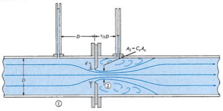
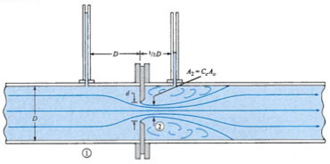
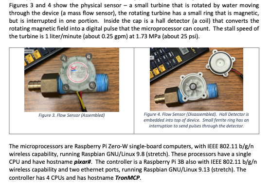

Lab 2 - Flow Measurement in Conduits#
Course Website
Readings#
Engineering Fluid Mechanics - Chapter 11 (Cd for spheres, p.414)
Holman, J.P. (2012) Experimental Methods for Engineers, 8th Ed. (Chapters 1-3)
Mass Flow Meter & Datalogger Scripts Programs used in the laboratory (this section is also in the left navigation bar)
Home Utility Management System (Flowmeters) A research site that implements mass flow meters to study resedintal water use.
Introduction to Programming A good on-line programming course.
Python Programming Python specific.
Computational Thinking and Data Science Python applied to a variety of topics, has some good graphing discourse. These are older ENGR-1330 instructor notes
Videos#
Flowmeter (Venturi/Orifice) Theory and Experiments (TQ 2020) (YouTube) This video uses nearly identical apparatus as used here at TTU. The entire video is theory and demonstration of the apparatus; the demonstration starts at time stamp 10:41 (if you want to skip the theory)
Installing a cheap water flow meter with attached Raspberry Pi ZeroW Nearly identical to the mass flow meter used in the laboratory. The script in the laboratory uses a different GPIO pin than used in this video.
CE-3105-FlowMeter-Datalogger Connection (Component of Laboratory 2) Video showing how to connect to the datalogger.
Objective#
Measure the flow rate of an incompressible fluid using several devices—Venturi meter, orifice plate, rotameter, external mass flow meter, internal turbine meter, and the time-to-fill method—and compare their apparent accuracy and efficiency.
Note
In this exercise, time-to-fill is treated as the ground-truth measurement.
Background#
Flowrate can be measured indirectly with venturi meter, orifice plate meter and rotameter by a combination of continuity, the modified Bernoulli equation, and mass flowrate concepts.
They are be combined together to make the flow measurement apparatus below:.

Venturi Meter#
The venturi meter is a combination of a converging tube, a throat and a diverging tube. The discharge of liquid is calculated by measuring the pressure differential between the inlet and the throat which is caused by the differences in diameters. The shape of the venturi is designed to minimize energy loss in the device.


Using continunity
Defninition of discharge and modified Bernoulli equation is:
Orifice Plate Meter#
An orifice meter is a round opening in a plate. This device is then put within the pipe so that it is perpendicular to the direction of flow.
 

Externally they look like a very short section of pipe between two flanges as in the photograph above
Discharge is determined by measuring the head loss between the upstream and downstream of the device.
Head loss can be written in terms of a coefficient \(K\), which varies with the type of the orifice meter.
First consider a modified Bernoulli equation across the orifice plate
Then continunity to arrive at a structure to estimate discharge
Rotameter#
The rotameter measures flowrate by detecting the position of the float. It is a vertical tapered tube with a moveable plug inside. It is one kind of variable-area flow-meter.


Because of the greater flow area at the top, velocity is lower than the bottom of the tapered tube. The flowing fluid lifts the plug up by the drag force (just like Stoke’s Law) created by the fluid. The weight of the plug acts downward. The equilibrium position of the plug depends on the flowrate which is indicative of the rate with which the fluid is passing.
Mass Flow Meters#
A mass flow meter directly measures the flow by means of a near zero-inertia turbine that is rotated by liquid moving through the device (a mass flow sensor), the rotating turbine has a small ring that is magnetic, but is interrupted in one portion. Inside the cap is a hall detector (a coil) that converts the rotating magnetic field into a digital pulse that the microprocessor can count. These scale in size to very large devices but the general principle of operation is the same. The figure below shows a small (20L/minute) flowmeter.

This flowmeter is placed in-line with the water outlet (or inlet) to provide an total flow.
The laboratory may incorporate the newer hydraulic bench (model H1F) with a built-in flowmeter (herein labeled as internal turbine flow meter which is to be used to compare the result from the external mass flow meter, time-to-fill, and the various pressure drop devices.
The (New) TecQuipment H1F Digital Hydraulic Bench uses an electronic flowmeter that operates on the turbine flowmeter principle. A turbine flowmeter measures the volumetric flow rate of a fluid by having the fluid pass through a pipe and cause a rotor to spin.
How the H1F’s flowmeter works
A rotor with angled blades is positioned within the path of the water flowing from the submersible pump.
As water flows through the meter, it causes the rotor to spin. The speed at which the rotor spins is directly proportional to the flow rate of the water.
As the blades of the rotor pass a magnetic pickup sensor, an electrical pulse is generated. The faster the rotor spins, the more pulses are generated per unit of time.
The frequency of these electrical pulses is measured by a transmitter, which processes the signal and sends the data to the hydraulic bench’s digital display.
The digital display then shows the flow rate in units like litres per second (L·s⁻¹) or litres per minute (L·min⁻¹).
If your instructor uses the older bench (model H1D) without the built-in flowmeter you will only report the esternal mass flow meter, time-to-fill and the various pressure drop devices. Simply leave the turbine meter entries unfilled (or N/A).
1. Laboratory Report#
After completing the experiment, students must submit a detailed laboratory report. The report should include:
Introduction: Overview of the principles of flow measurement and the objectives of the experiment.
Methods: Detailed description of the experimental procedure and setup. The section must include:
Apparatus and Materials: List all equipment and materials used, including flow meters and auxiliary devices.
Procedure: Provide a step-by-step outline of how the experiment will be performed, ensuring it aligns with the provided laboratory datasheets.
Safety Considerations: Include all safety measures relevant to the setup and execution of the experiment.
Results: Present all collected data, calculations, and graphical representations (e.g., calibration curves).
Discussion: Analyze results, including errors and observations, and compare findings to theoretical expectations.
Conclusion: Summarize findings and their implications.
References: Cite all sources, including textbooks, manuals, and instructional videos.